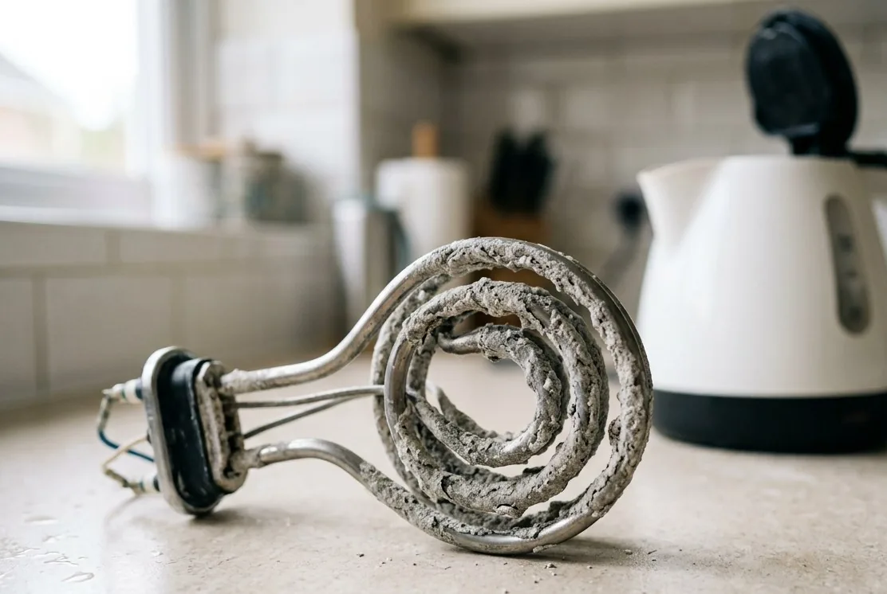

Ионообменное умягчение
Снижает жёсткость и автоматически восстанавливает ресурс раствором соли.
Где метод не сработает
Нужны соль, дренаж, правильная настройка и расчёт ресурса между регенерациями.
Накипь повреждает нагревательное оборудование и усложняет уборку, но степень умягчения и схема зависят от анализа, расхода и требований к воде.

Для расчёта ресурса умягчителя важны жёсткость и расход. Также проверяют железо и марганец: они могут влиять на схему и ресурс смолы.
| Наблюдение | Возможные причины | Проверка |
|---|---|---|
| Накипь в чайнике и бойлере | Соли кальция и магния | Общая жёсткость, щёлочность, минерализация |
| Белые капли на смесителях | Жёсткость и общий солевой состав | Жёсткость, сухой остаток/минерализация |
| Белая пыль от увлажнителя | Растворённые минералы в распыляемой воде | Минерализация; для прибора рассмотреть отдельную воду |
Посмотрите общую жёсткость рядом со строками железа и марганца: именно они решают, отработает ли смола заявленный ресурс.
Сравнивать варианты имеет смысл, когда известны жёсткость и суточный разбор воды, иначе промежуток между регенерациями остаётся неизвестным.
Снижает жёсткость и автоматически восстанавливает ресурс раствором соли.
Нужны соль, дренаж, правильная настройка и расчёт ресурса между регенерациями.
Может одновременно снижать жёсткость и часть других загрязнений в допустимых пределах.
Не заменяет отдельные ступени при сложной воде и высокой производительности.
Обратный осмос или другое решение для воды, используемой в чайнике и готовке.
Не защищает бойлер, душ и технику во всём доме.
Умягчитель занимает не только площадь под баллоном, но и место под солевой бак и под запас соли, который нужно куда-то ставить и удобно досыпать. Кабинетная схема, где бак и колонна в одном корпусе, экономит площадь, но проигрывает по ресурсу и подходит не любому расходу; колонная требует больше места, зато гибче по производительности. Отдельно проверьте доступ к крышке солевого бака сверху – иначе досыпка соли будет мучением при каждом обслуживании.
У ионообменного умягчителя промывочная вода солёная: при регенерации в дренаж уходит вытесненный раствор вместе с солями жёсткости. Именно поэтому слив умягчителя, как правило, нельзя заводить в септик с биологической очисткой – соль угнетает микрофлору камеры, и станция начинает работать хуже. Рабочие варианты обычно другие: отдельный дренажный колодец, фильтрующее поле с запасом, накопительная ёмкость или согласованный сброс мимо септика.
Другие показатели источника, которые влияют на схему.
ОткрытьПроизводительность, ресурс и расход соли.
ОткрытьОтдельная вода для кухни и увлажнителя.
ОткрытьПлохое мыление и ощущение стянутости – типичные бытовые признаки повышенной жёсткости, и их стоит воспринимать как повод сдать анализ. Но ощущения субъективны и зависят ещё от температуры воды и средств. Решает не самочувствие, а цифра общей жёсткости в протоколе.
Умягчение снижает поступление солей жёсткости к нагревательным элементам, и это главный денежный аргумент за него. Но бессрочной защиты никто пообещать не может: результат зависит от настройки, ресурса между регенерациями и от того, поддерживается ли система в рабочем состоянии. Уже образовавшуюся накипь оборудование не растворяет, её удаляют отдельно.
Ионный обмен меняет солевой состав, поэтому вопрос питьевого использования решается по протоколу воды после системы и по её назначению. Многие оставляют для кухни отдельную линию, где вода готовится именно под питьё и чайник. Медицинские рекомендации – не наша зона: мы отвечаем за состав и подтверждаем его анализом.
Расход соли зависит от жёсткости, объёма загрузки и того, сколько воды проходит между регенерациями, поэтому его считают под конкретный дом. К соли прибавляются вода на регенерацию, электричество, сервис и периодическая замена смолы. Эти строки лучше увидеть до покупки, а не после первого сезона эксплуатации.
Кувшин или кухонный фильтр улучшают воду в чайнике, но никак не влияют на бойлер, душ, стиральную и посудомоечную машину. Именно там накипь обходится дороже всего. Если задача – защитить технику и сантехнику, решение ставится на ввод, а кухонная ступень остаётся дополнением.
Ответим, что проверить и сколько это будет стоить.